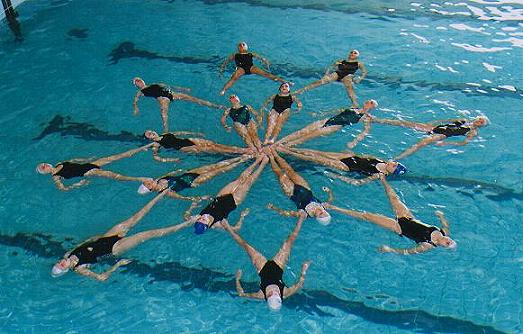
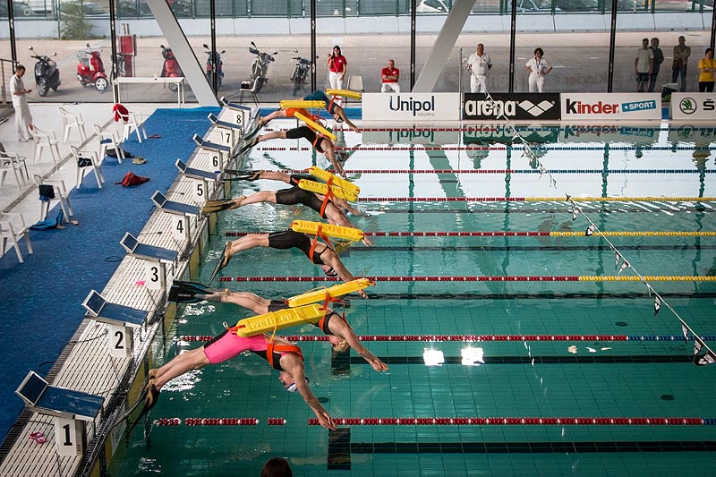

| HOME | CHI SONO | SPORT | ESPERIENZE | CONTATTI |
|---|
Sin dai miei primi anni di vita ho fatto nuoto, variando tra le molteplici discipline che lo costituiscono. Iniziando dai semplici corsi di nuoto, all’età di 7 anni ho cambiato direzione volgendomi alla disciplina del nuoto sincronizzato. L’ho praticato per 6 anni, durante i quali ho anche partecipato a delle gare. La cosa che ricordo con più piacere di quegli anni è il forte legame che si è creato tra noi compagne di squadra.  Dopo questi anni, ho deciso di cambiare e di passare al perfezionamento della tecnica, iscrivendomi ad un corso che mi ha accompagnata per molti anni e con il quale ho fatto anche alcune gare. In parallelo ho anche fatto per un breve periodo pallanuoto. Dopo un periodo di stop forzato, a Settembre di quest’anno mi sono unita ad una squadra di salvamento agonistico, disciplina che mi affascinava da tempo e che sono contentissima di praticare! 